<!DOCTYPE html>
<html lang="pt-BR">
    <link rel="stylesheet" href="css/index.css" media="screen">
    <link rel="stylesheet" href="css/kanban.css" media="screen">
<head>
    <title>Página Inicial</title>
</head>
<body>
    <div class="container" id="docker">
        <aside class="menu" id="menu">
            <a href="#" class="btn-menu-2" id="menuBtn">≡</a>
            <a href="#" class="selecionado" id="btn-home">Home</a>
            <a href="#" class="opcao" id="btn-finalizados">Finalizados</a>
            <a href="#" class="opcao" id="btn-excluidos">Excluídos</a>
            
        </aside>
        <div class="content" id="content">
            <div class="cabecalho">
                
            </div>
            <div class="kanban-div" id="content-kanban">
                <div class="kanban" id="kanban">
                </div>
            </div>
        </div>
    </div>
    
</body>

<script src="https://code.jquery.com/jquery-3.6.0.min.js"></script>
<script src="javascripts/coletarInformacoes.js"></script>
<script src="javascripts/atualizarInformações.js"></script>
<script src="javascripts/editarConfig.js"></script>
<script src="javascripts/abrirFinais.js"></script>
<script src="javascripts/ativarKanban.js"></script>
<script>
    fetchKanban();
    document.getElementById('config').addEventListener('click', ativarConfig);
    document.getElementById('menuBtn').addEventListener('click', desativarMenu);
    document.getElementById('btn-finalizados').addEventListener('click', abrirFinalizados);
    document.getElementById('btn-home').addEventListener('click', abrirHome);
    document.getElementById('btn-excluidos').addEventListener('click', abrirExluidos);
</script>
</html>
